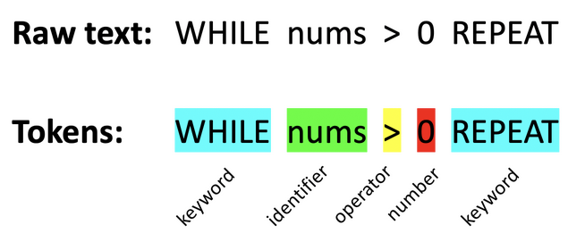

Utility software is software used for the maintenance of an operating system.
It is used to ensure consistent and high performance of an OS.
Compression - reduces the size of files by reformatting the data or by removing unnecessary data
Disk defragmentation – Over time, some files become fragmented in the hard drive.
Disk defragmentation rearranges the contents of the hard drive so files can be accessed more efficiently
Antivirus/ anti-malware – detects and removes malicious files from the system
Backup – routinely creates backups of specific files selected by the user
Open source vs closed source software
Open source and closed source software refers to whether software is publicly available or not.
It can be modified and improved by anyone
Technical support from the community
It Can be freely modified and sold
There is lower security, so code can be damaged or deleted
Support online may be insufficient or there may not be a user manual
Regular updates and well tested
Technical support and user manuals available
High levels of security
Licence restricts how the software can be used
Users cannot modify and improve the software as they do not have access to the source code
Translators
A translator is a program that converts high-level source code into low-level object code (code a computer can execute e.g. machine code)
Compiler – translates all the code at once as well as performing checks and reporting errors
Interpreter - translates and executes the code line by line.
Interpreters are useful for testing code during development;
however, they are slower than compiled files as the code has to be translated each time it is run
Assembler – assemblers translate assembly code into machine code.
Assembly code is "one level up" from machine code and is processor-specific.
Each line of assembly code is roughly one line of machine code, but is more human-readable.
Stages of compilation
Compilation is a complicated process involving four main stages of processing.
1. Lexical analysis
First, whitespace and comments are removed.
Then, the code is split into words and special characters which are represented as tokens.

2. Syntax analysis
Tokens are then checked against the syntax of the language ensuring they are in a valid order.
Any tokens that violate the grammar of the language are added to a list and outputted at the end of this stage.
An abstract syntax tree is produced which represents the source code as a tree.
Moreover, a symbol table is added to identify the names of defined objects.
Semantic analysis is where logical mistakes are found, e.g. an undeclared variable.
3. Code generation
The abstract syntax tree is used to generate object/machine code.
4. Code optimisation
Optimisation involves searching the machine code for ways to improve the efficiency of the program.
For example, redundant code is removed, or repeated code is grouped and replaced with more efficient code.
Linkers, loaders and libraries
Libraries are pre-compiled programs containing code which can be incorporated into other programs using a linker.
Libraries are useful because the code is efficient, error free and can save time in developing modules.
There are two types of linkers: static and dynamic.
Static linkers copy the library into the main file, meaning update to the library won't affect the program.
However, this does increase the file size.
Dynamic linkers include the address of a library in the main file reducing the file size.
The library is retrieved during runtime.